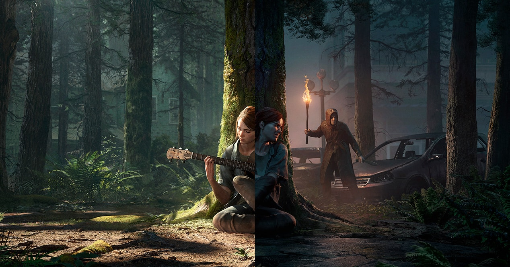
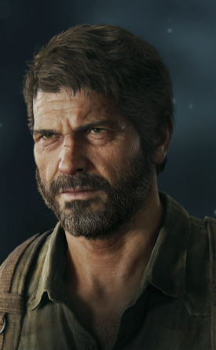
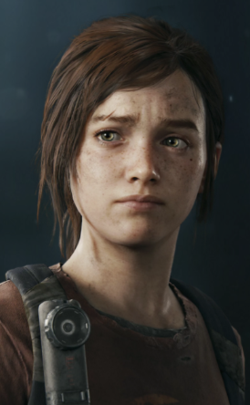
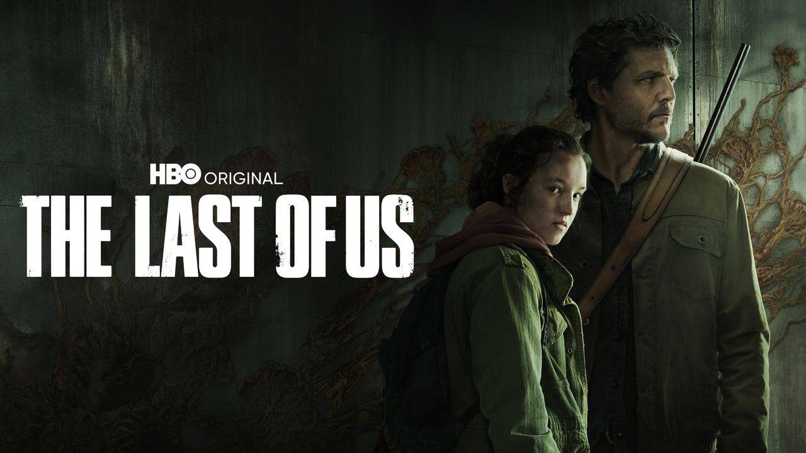

EXPERIMENTA EL VIAJE DE SUPERVIVENCIA DE JOEL Y ELLIE EN LA SERIE THE LAST OF US
Décadas después de que la infección del cordyceps destrozara los Estados Unidos, las facciones implacables y los infectados se presentan como una amenaza constante para los sobrevivientes. Joel, un duro contrabandista, tiene la tarea de escoltar a la adolescente Ellie a un lugar seguro. A pesar de cargar con traumas del pasado, el violento viaje a lo largo del país le da a Joel "algo por lo que luchar".
5 años más tarde, Joel y Ellie se asientan en Jackson, Wyoming. Después de que un horrible accidente sacudiera a la comunidad, Ellie emprende un viaje incansable en busca de justicia y de un cierre. Los peligros que se encuentra no serán sus únicos obstáculos; también debe lidiar con las repercusiones de sus actos.
Ganadora de más de 500 premios del Juego del año, la serie The Last of Us es aclamada por la crítica debido a su narrativa emocionante, a sus personajes inolvidables y a su jugabilidad cargada de suspenso, acción y aventura.


JOEL.
Joel es un operador despiadado en el mercado negro subterráneo. Independiente e ingenioso, se endureció tras una trágica pérdida. A lo largo de su viaje, descubre la fuerza para convertirse en una figura paterna para Ellie y luchar por un mejor futuro para ella y para él.

ELLIE.
Cuando conocemos a Ellie por primera vez, es una chica de 14 años que no conoció el mundo "normal" anterior a 2013. Por lo tanto, Joel no se convierte solo en su transportador…, sino también en un guía para el mundo. Es precoz, ingeniosa y capaz. Ya sea con sus juegos de palabras o superando crisis, su astucia e ingenio demuestran ser invaluables.
ABBY.
Cuando conocemos a Abby en The Last of Us Parte II, es una miembro importante del WLF. A pesar de su reputación de luchadora formidable, oculta su vulnerabilidad bajo una presencia estoica e imponente. Anteriormente, ella y su padre formaban parte de las Luciérnagas hasta que, tras un trágico accidente, Abby quedó sola. Ahora debe encontrar su identidad, un sentido y un propósito más allá de su necesidad de justicia.

UNA NUEVA VERSIÓN FIEL.
Conoce la emocionante historia y los personajes inolvidables de Joel y Ellie en The Last of Us y explora los eventos que cambiaron para siempre las vidas de Ellie y su mejor amiga, Riley, en el capítulo de precuela aclamado por la crítica: Left Behind.